This software is an interactive tool for making the primary Quality Control (1st QC, QC1) on Hydrographic Cruise Data, such as from the GO-SHIP program. It is designed to detect outliers in data sets and to ensure adequate precision of the data. The tool aims for biogeochemical data from water samples collected during oceanographic cruises. The tool is built in Python, Node, JavaScript, HTML5 and related technologies.
The development of this software was funded by Atlantos-H2020 EU Project, under the WP2 Enhancement of ship-based observing networks, and Task 2.1 GO-SHIP and
D2.6 GO-SHIP Software and Manuals (CSIC): Software packages and best practice manuals and knowledge transfer for sustained quality control of hydrographic sections in the Atlantic.
The software was developed using fully open source technologies and code was released to a public repository (https://github.com/ocean-data-qc/ocean-data-qc) on 14/dec/2018 with the release 0.8. That repository will hold the most up to date code, releases, as well of serving as bug-tracking system for reporting issues and ask for enhancements. This address will host any future updates.
Core team developers are Jesus Cacabelos <jcacabelos@iim.csic.es> and Anton Velo <avelo@iim.csic.es>. Coordinator of the development is Anton Velo <avelo@iim.csic.es>. D2.6 is leaded by Fiz F. Perez <fiz.perez@iim.csic.es>. Task 2.1 is leaded by Toste Tanhua <ttanhua@geomar.de>. Contributors on the development of the application are Fiz F. Perez <fiz.perez@iim.csic.es>, Toste Tanhua <ttanhua@geomar.de> and Nico Lange <nlange@geomar.de>
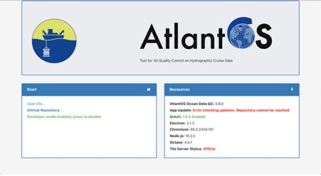
The above image is the welcome screen where there is a section informing about the actual version of the different applications and frameworks used by the application. A detection of these versions is done when launching the application and warnings will appear for notifying problems
● Bokeh. Bokeh is an interactive visualization library that targets modern web browsers for presentation. Its goal is to provide elegant, concise construction of versatile graphics, and to extend this capability with high-performance interactivity over very large or streaming datasets. Bokeh is the main library for the application, as deals with graphic presentation and interaction (Bokeh Development Team (2014). Python library for interactive visualization. http://www.bokeh.pydata.org)
● Electron. Electron is an open source library developed by GitHub for building cross-platform desktop applications with HTML, CSS, and JavaScript. Electron accomplishes this by combining Chromium and Node.js into a single runtime and apps can be packaged for Mac, Windows, and Linux. The application uses Electron to embed in an application the bokeh plots and drive the user interaction with interface, providing also all the menus and interfaces.
● GNU Octave. GNU Octave is a high-level interpreted language, primarily intended for numerical computations. It provides capabilities for the numerical solution of linear and nonlinear problems, and for performing other numerical experiments. It also provides extensive graphics capabilities for data visualization and manipulation. The GNU Octave language is quite similar to Matlab™ so that most programs are easily portable. The application uses GNU Octave to drive main oceanographic calculations, as it's the main used language in that field of work, and most typical Matlab™ open source oceanographic libraries were built in Matlab™. Running these calculations directly in GNU Octave allows to easy integrating code from researchers.
The application can actually work without Octave installed. Despite that most Calculated Parameters need it for their calculation, if GNU Octave is not present, the application will run with the parameters present in the data files.
● Python. Python version 3 is the main language in the application. Most processing on data and files are performed through Pandas and/or NumPy libraries in python, and sent to Bokeh, which is also built on python and has an own javascript library for displaying and interacting. Python source code is presented in ocean_data_qc folder in the application.
● JavaScript. Electron is built on node, that is built with JavaScript. All code for menus, screens, and interacting elements on the application are made with Javascript. Some of the functionality are provided directly by Electron and some other by Bokeh, but the code to merge all these things were built with JavaScript. JavaScript source code is presented in ocean_data_qc_js folder in the application.
There are two main ways for installing the software:
Once the application is installed, it’s highly encouraged to have GNU Octave installed and in the default installation path, as it’s the only way that it would be detected and used.
Once installed, the application can be started by using the shortcuts generated by the installers of the different platforms. That shortcuts will be placed in the typical locations for launching the applications, Start Menu in Windows, Applications in macOS, and Dash or equivalent in GNU/Linux
If the application where installed by source from code repository, the README.md provides detailed instructions on how to proceed
The main objective of this application is to ease the first level of QC on oceanographic cruises by providing a tool for helping the user to take decisions about the data quality of the samples. The tool supports the generation of outputs for data centers with appropriate documentation for both the data file itself and on the performed QC.
As the actual de-facto standard format for reporting oceanographic data from cruise sections is the WHP exchange bottle format (https://exchange-format.readthedocs.io), used and recommended by GO-SHIP and the data centre of the network, CCHDO, we will use it for defining the name of parameters and the quality flags of the application. A full description of these names and quality flags can be found in the cited repository.
Even when the application internally uses these WHP exchange bottle names, it has been designed to try to translate some other common naming schemes to their WHP equivalent, facilitating the usage of the application. When exporting to WHP format, the WHP exchange bottle names will be used, thus allowing the user to convert some common names to their WHP equivalent.
The following parameters are REQUIRED to be present in exchange bottle files where the parameter name occurs within the Parameter and Unit Lines and their values be present in the Data Lines.
More information about these parameters here
Common parameters:
|
|
|
More information about these other parameters here
The first step is to open a data file. Both formats, common CSV and WHP Exchange Bottle will be recognized and parsed. If the file is processed correctly, a Project Settings form will appear, otherwise, error messages will be presented
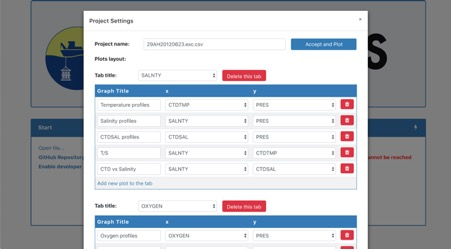
The application provides a predefined default layout directed to ease the Quality Control of numerous parameters. The plots included by default in each tab have proven to be useful for detecting outliers for that tab parameter. It includes not only profiles but property-property plots against the most relevant sources of variability for that parameters. Many calculations of derived parameters are done by default, producing more information for the 1stQC task, and avoiding typical errors when manually computing these values. Additionally, neural network approaches have been including for a number of parameters, generating approximated values that, even when they should be considered carefully, can be very helpful for detecting outliers.
Let’s describe the elements that are showed in the Project Settings form:
● Project name. The file name that is being opening will be the project name by default. When saving the project an .aqc (Atlantos Quality Control) file will be created and saved. That file stores the data as well as all the relevant information on the QC task.
● Tabs. The application will generate tabs for the parameters to QC that recognizes in the data file. Under each tab, the predefined property-property plots with available data will be presented, allowing the user to add, modify or delete any of them.
Once the user agrees with the settings, Accept and Plot button should be pressed. The application will then process the layout and present the main interface. The details of this interface are detailed in Main Layout section of this document.
Once a data file is open, the user is encouraged to save the project in the .aqc format of this application. The .aqc is a zip compressed file that stores the original data file, track the QC process, and allows to update the data set with newer or updated data (ex: when new statins are performed during a cruise, or when new parameter data are received or updated)
The QC task consist on assigning quality flags to the data, where we consider the values are good, questionable or bad, i.e. following the WOCE standards. The layout provided and the capabilities of the software to calculate a variety of helper parameters, were designed to give support to the user in taking the right decisions. Thus, both the layout and the calculated parameters can be easily customized to fit each one needs. Also, changing the visibility of some flags would be convenient for readability.
To assign a quality flag to a value, just:
|
QC Value |
Description |
|
2 |
Good Data |
|
3 |
Questionable Data |
|
4 |
Bad Data |
|
6 |
Mean of replicate measurement |
|
9 |
Not sampled |
One of our main efforts when designing the application, was the capability of merging data with newer one. This way, the Data > Update from CSV Menu, presents an interface to guide the user in the task of adding or deleting columns and rows, and updating values or their flags.
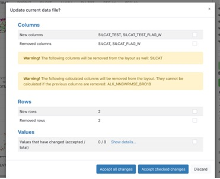
The objective is to prevent the user from having to redo work already done when new data is received or processed. Specifically, the application was designed to help the user when new rows of data are included in the data file due to the advance of a cruise for example (new stations), and allows the user to decide whether to keep or reject the QC performed previously for a parameter. The Show details link under the Values section will show the details about the changes, proposing actions to the user but allowing to decide. There is a number of different scenarios here that we’ve analyzed to develop the section, for example when parameter values change due to new calibration or re-analysis, may be we want to keep most or all the previous flags, but maybe we want to re-start from zero the QC.
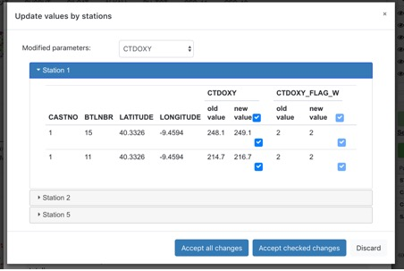
This is the main interface, it will appear once the selected layout and file are processed:
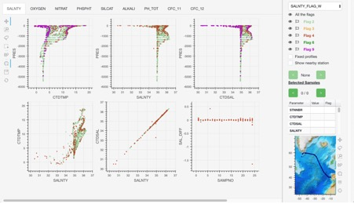
The main layout is composed by a tabbed layout of plots, defined for each parameter to do QC with, a left bar with a set of tools to interact with the plots, and a right sidebar with the information needed to do the QC, selection of parameters, visibility and flagging buttons, small table with the data for selected samples, and a bathymetric map. Detailing each section:
Tabbed grid of plots:
The plots defined are linked when sharing a parameter in same axis, this way, if a zoom is performed in any of the plots for a parameter (ex: pres in y axis), all plots with that parameter in same axis are zoomed the same way (ex: all profiles with pres in Y axis). Furthermore, when samples are selected, they appear selected in all plots, and the profiles displayed appears also in all plots
Plot tools:
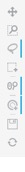
From top to bottom:
● Pan tool. It moves the plot content, the data along the axis.
● Box Zoom.
● Lasso select. It makes selections around the samples
● Box select.
● Wheel zoom. It zooms some plot or range of the plot.
● Tap. It gives the possibility to select one single sample with one click
● Save. It saves the current plot view to an image file
● Reset. All the plots ranges zoom and selections are reset to default values
Sidebar:
On the top of the bar, there is a drop down menu where the user can choose the parameter to perform the QC on, that is initially linked with the selected tab. Once the flag parameter is changed, all the colors of the plot samples on the current tab are updated with the flag colors for that parameter:
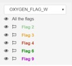
Below, there are some controls to perform the QC by updating the flag values on the selected samples. The flag itself is the button to perform the QC. The visibility of samples with any flag can be changed with the eyes icons.
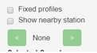
The “Fixed profiles” checkbox means that the user will keep seeing the profiles even if the samples are invisible due to changed visibility for some flags in the upper section, as can be seen in following example, where the profile remains in the right panel even when no samples are shown by flags
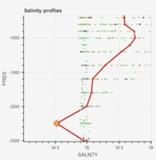 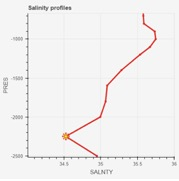
If the “Show nearby station” is checked then a new profile will be visible in the plot, it will be located next to the current profile. If the arrow buttons are pressed, then that auxiliar profile will be updated with the profile of the following or previous station for the cruise.
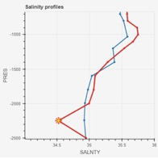
If more than one sample point is selected, the data of one of them (selected randomly) is reflected in the data table. The user can iterate over all the selected items through the arrow buttons. The flag values for a single sample can also be updated directly in the data table by double-clicking over the Flag value. In the next example, CTDSAL flag have been double-clicked and value can be changed.
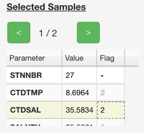
Finally at the bottom of the sidebar, a bathymetric map is located. In the map, the stations can be hovered to show their details, or selected. If a station is selected, then all the samples that belong to that station are selected as well in the rest of the plots. In the following figures, left plot represents the online version of the map, shown when the computer has an online internet connection, and the one on the right is the offline map version, useful on not online situations, as some during some cruises. The different appearance of map is due to different providers used. The left, lighter colors map, uses the World Ocean Base layer of the ArcGis tile server service, based on GEBCO (https://services.arcgisonline.com/ArcGIS/rest/services/Ocean/World_Ocean_Base/MapServer) which allows full online available resolution. The right plot shows an internal offline map based on ETOPO1 (doi:10.7289/V5C8276M), which can be zoomed up to a limited resolution to save storage space in local computer.
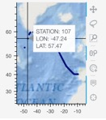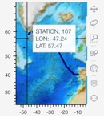
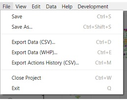
● Save and Save As… This options saves the project as an *.aqc file
● Export Data (CSV). It exports the current data, no metadata is included in the file and the names of columns are kept from original imported file.
● Export Data (WHP). It exports the current data together with the metadata following the WHP Exchange Bottle format, and with recognized parameter names converted to WHP format ones.
● Export Action History. It exports all the steps that the user made in the application, this includes flagging samples and updates from other files.
● Close Project. The app will come back to the Welcome Window. If the project is not saved the user will be prompted
● Exit. The app will be closed
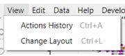
This option shows the steps that the user made, for instance: flag values updated, details about updates with other CSV file…
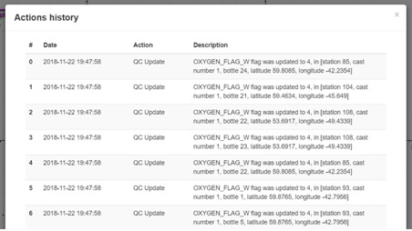
The “Project Setting Form” appears again in order to change the layout only for the current open project. This layout is also saved if the project is saved as an aqc file. This menu is used to design your own QC environment, which is particularly useful for non-standard variables where it is not pre-defined which relations are useful for the QC process.
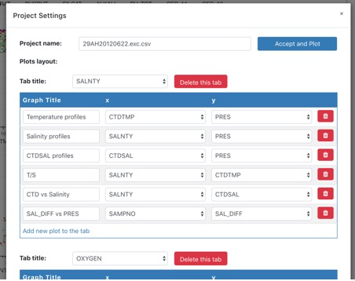
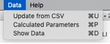
This option gives to the user the possibility to updating the current data with a new CSV or WHP file. A comparison of all the values is performed and the results are shown on this popup:
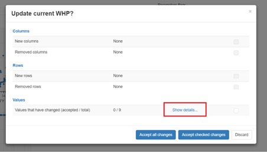
The user may or may not accept the changes. There could be different columns or rows. If some value on a row are updated then the link “Show details…” can be pressed in this following form and accept each value separately:
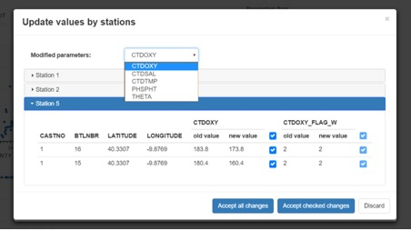
If this menu option is selected then this form will popup:
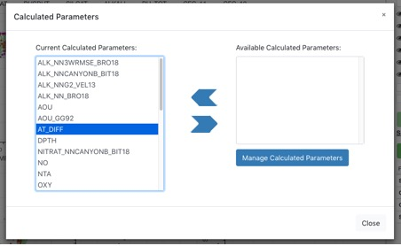
Two lists of calculated parameters appear in the screen. The list on the left are the parameters than can be used in the current layout. The list on the right are the parameters that can be added to make them available in the current project. If you need to create a parameter that is not in the list then press “Manage calculated Parameters”, this other form will show up:
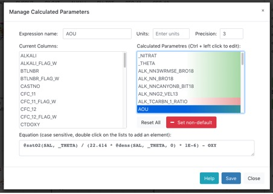
New parameters can be created here. The parameters in red means that they use some dependencies that are not currently satisfied by the project data. If they are green then they were correctly computed and can be added to the current project layout, on top of that they will be available in other projects as well, because they are set as “default” parameters. This can be avoided by selecting the parameter and pressing on the “Set non-default” button.
There are some rules to know if we want to create a calculated parameter from scratch. The main keys are explained under the “Help” button menu. It gives you some hints about how to add columns, functions and parameters to the equations. Some extra functions can be used from the python Seawater library and Octave scripts can also be added to the application.
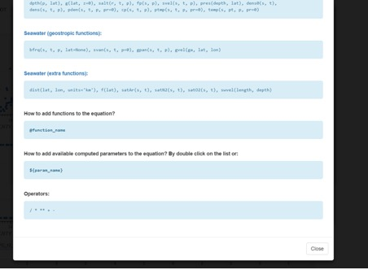
This option will popup an scrollable screen displaying a table with the full data frame in use. All columns, whether imported from the file or calculated by the application will appear there. It’s selectable, so the user can copy it and paste in any spreadsheet application. It’s useful for inspecting data.
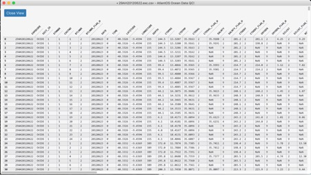